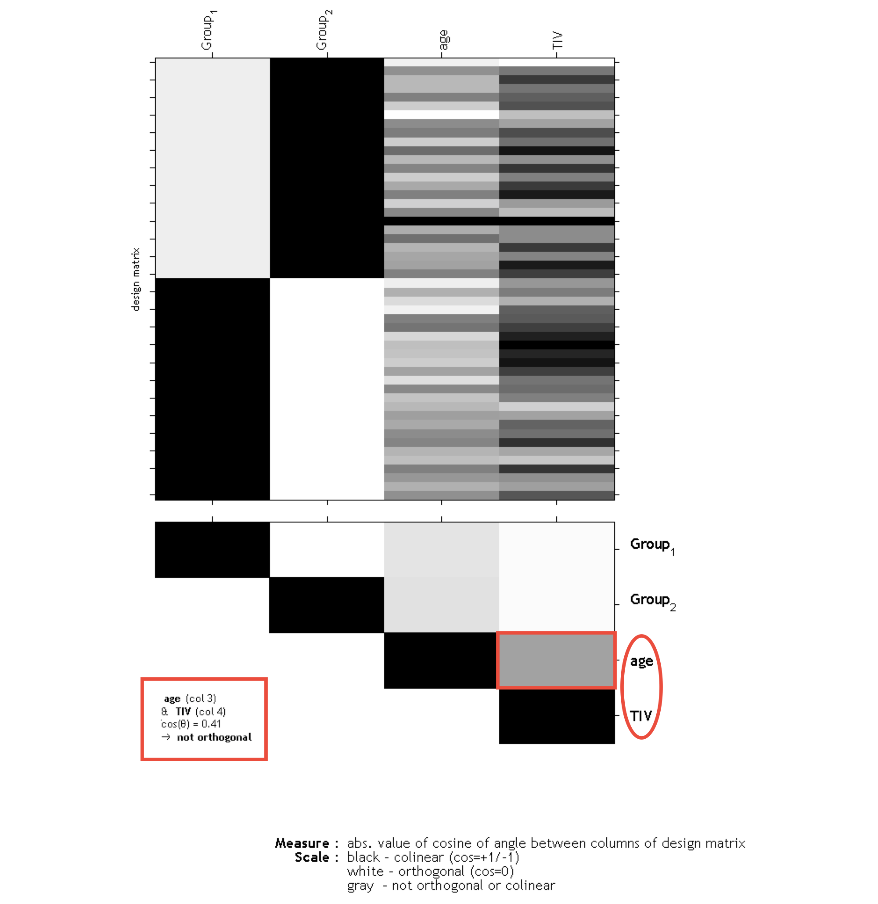

Orthogonality of total intracranial volume (TIV) to other parameters
If you have modeled TIV as confounding parameter, you must check whether TIV is orthogonal (in other words independent) to any other parameter of interest in your analysis (e.g. parameters you are testing for). This means that TIV should not correlate with any other parameter of interest, otherwise not only the variance explained by TIV is removed from your data, but also parts of the variance of your parameter of interest.
Please use ''Overall mean'' as ''Centering'' for the TIV covariate. Otherwise, the orthogonality check sometimes even indicates a meaningful co-linearity only because of scaling problems.
To check for design orthogonality, you can use the Review function in the SPM GUI. Select the SPM.mat file and choose Design -> Design orthogonality from the menu to display the design orthogonality. Gray boxes between the parameters point to a colinearity (correlation): the darker the box the larger the correlation (which also holds for inverse correlations). If you click in the box the colinearity between the parameters will be displayed. 
The larger the correlation between TIV and any parameter of interest the more the need to not use TIV as nuisance parameter. In this case an alternative approach is to use global scaling with TIV. Apply the following settings for this approach:
- Global calculation -> User -> Global values <- Define the TIV values here
- Global normalisation -> Overall grand mean scaling -> Yes -> Grand mean scaled value -> Define here the mean TIV of your sample (or as approximation a value of 1500 which might fit for the majority of data from adults)
- Normalization -> Proportional
This approach is (proportionally) scaling the data according to the individual TIV values. Instead of removing variance explained by TIV all data are scaled by their TIV values. This is also similar to the approach that was used in VBM8 (''modulate for non-linear effects only''), where global scaling was internally used with an approximation of TIV (e.g. inverse of affine scaling factor).
Please note that global normalization also affects the absolute masking threshold as your images are now scaled to the ''Grand mean scaled value'' of the Global Normalization option. If you have defined the mean TIV of your sample (or an approximate value of 1500) here, no change of the absolute threshold is required. Otherwise, you will have to correct the absolute threshold because your values are now globally scaled to the ''Grand mean scaled value'' of the Global Normalization option.
An alternative approach for all models with more than one group should not be unmentioned. This is to use TIV as nuisance parameter with interaction and mean centering with factor ''group''. That approach will result in separate columns of TIV for each group. The values for the nuisance parameters are here mean-centered for each group. As the mean values for TIV are corrected separately for each group, it is prevented that group differences in TIV have a negative impact on the group comparison of the image data in the GLM. Variance explained by TIV is here removed separately for each group without affecting the differences between the groups.
Unfortunately, a no clear advice for either of these two approaches can be given and the use of these approaches will also affect interpretation of your findings.